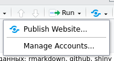

7 Представление данных: rmarkdown
Достаточно важной частью работы с данными является их представление. Мы рассмотрим наиболее распространенный варианты: rmarkdown, flexdashboard и shiny. Смотрите книжку (Xie, Allaire, and Grolemund 2019)(https://bookdown.org/yihui/rmarkdown/) или cheatsheet.
7.1 rmarkdown
rmarkdown – это пакет, который позволяет соединять R команды и их исполнения в один документ. В результате можно комбинировать текст и исполняемый код, что в свою очередь позволяет делать:
* докумунты в формате .html, .pdf (используя , мы почти не будем это обсуждать), .docx
* презентации в формате .html, .pdf (используя пакет beamer) .pptx-презентации
* набор связанных .html документов (полноценный сайт или книга)
7.1.2 Составляющие rmarkdown-документа
7.1.3 Пример rmarkdown-документа
Создайте файл .Rmd в какой-нибудь папке (в RStudio, это можно сделать File > New file > R Markdown). Скомпелировать файл можно командой:
или кнопкой . Вот пример кода:
---
output: html_document
---
## Данные
В документе можно вставлять R код
```{r}
summary(iris)
```
## График
И строить графики
```{r}
library(tidyverse)
iris %>%
ggplot(aes(Sepal.Length, Sepal.Width))+
geom_point()
```
Создайте и скомпелируйте свой rmarkdown-документ с заголовком, текстом и кодом.
7.1.4 Markdown
Универсальны язык разметки, работает во многих современных он-лайн системах создания текста.
7.1.4.1 Заголовки
## Заголовок уровня 2
#### Заголовок уровня 47.1.4.2 Форматирование
_италик_ или *другой италик*
__жирный__ или **другой жирный**
~~зачеркивание~~италик или другой италик
жирный или другой жирный
зачеркивание
7.1.4.3 Списки
* кролик
* заяц
* заяц серый
1. машины
1. автобус
2. самолеты
+ можно еще ставить плюс
- и минус- кролик
- заяц
- заяц серый
- машины
- автобус
- самолеты
- можно еще ставить плюс
- и минус
7.1.4.4 Ссылки и картинки
[Ссылка 1](https://agricolamz.github.io/2018_ANDAN_course_winter/2_ex.html)
<https://agricolamz.github.io/2018_ANDAN_course_winter/2_ex.html>
[Можно вставить ссылку потом, а пока отсавить метку][1]
Или даже просто голую [метку].

Опять же можно вставить только метку ![][2]
[1]: https://agricolamz.github.io/2018_ANDAN_course_winter/2_ex.html
[метку]: https://agricolamz.github.io/2018_ANDAN_course_winter/2_ex.html
[2]: https://raw.githubusercontent.com/agricolamz/2018_ANDAN_course_winter/master/rmarkdown.pnghttps://agricolamz.github.io/2018_ANDAN_course_winter/2_ex.html
Можно вставить ссылку потом, а пока отсавить метку
Или даже просто голую метку.

Опять же можно вставить только метку
7.1.4.5 Код
Код нужно оформалять вот так `rmarkdown::render()`Код нужно оформалять вот так rmarkdown::render()
```{python}
friends = ['john', 'pat', 'gary', 'michael']
for i, name in enumerate(friends):
print "iteration {iteration} is {name}".format(iteration=i, name=name)
```hey
5
dЕсли хочется использовать результат работы кода в тексте, нужно в начале поставить язык, который будет исполнять код, например, в
Фигурные скобки не обязательны, но тогда RStudio подсветит.
7.1.4.6 Цитаты
> Цитаты нужно офрмлять так.
> Это попадет в тот же фрагмент.
> А вот тут произошел разрыв. Кстати, здесь тоже можно использовать *markdown*.Цитаты нужно офрмлять так. Это попадет в тот же фрагмент.
А вот тут произошел разрыв. Кстати, здесь тоже можно использовать markdown.
7.1.4.7 Разрыв страницы
***7.1.4.8 HTML
<dl>
<dt>Чистый HTML</dt>
<dd>Еще можно писать в HTML.</dd>
<dt>и Markdown в HTML </dt>
<dd> даже работает **правильно**. Но можно использовать и <em>теги</em>.</dd>
</dl>- Чистый HTML
- Еще можно писать в HTML.
- и Markdown в HTML
- даже работает правильно. Но можно использовать и теги.
7.1.4.9 Таблицы
Еще есть целая наука как делать таблицы в Markdown, но я предпочитаю использовать он-лайн генератор.
7.1.5 Pandoc
Pandoc это программа, созданная Дж. МакФарлэйном (J. MacFarlane), которая позволяет переходить из разных текстовых форматов в другие, а также смешивать их. Я покожу лишь несколько полезных расширений.
7.1.5.1 Верхние и нижние индексы
2^10^ C~n~^k^210 Cnk
7.1.5.2 Нумерованные примеры
(@) Славный пример номер раз.
(@) Славный пример номер два.
(@three) Славный пример номер три, у которого есть *имя*.
Я могу сослаться на пример (@three)!- Славный пример номер раз.
- Славный пример номер два.
- Славный пример номер три, у которого есть имя.
Я могу сослаться на пример (3)!
7.1.5.4 Математика: \(\LaTeX\)
$\LaTeX$ код может быть в тексте $\frac{\pi}{\sum{n+1}}$ или отдельной строчкой:
$$\frac{\pi}{\sum{n+1}}$$\(\LaTeX\) код может быть в тексте \(\frac{\pi}{\sum{n+1}}\) или отдельной строчкой:
\[\frac{\pi}{\sum{n+1}}\]
7.1.6 Code chunks
Фрагменты кода имеют свои наборы свойств, который можно записывать в фигурных скобках.
7.1.6.1 Язык программирования
```{r}
summary(cars)
```
```{python}
x = "my string"
print(x.split(" "))
``` speed dist
Min. : 4.0 Min. : 2.00
1st Qu.:12.0 1st Qu.: 26.00
Median :15.0 Median : 36.00
Mean :15.4 Mean : 42.98
3rd Qu.:19.0 3rd Qu.: 56.00
Max. :25.0 Max. :120.00 ['my', 'string']7.1.6.2 Появление и исполнение кода
И код, и результат
```{r}
plot(mtcars$mpg)
```
Только результат
```{r, echo = FALSE}
plot(mtcars$mpg)
```
Только код
```{r, eval = FALSE}
plot(mtcars$mpg)
```
Исполняется, но не показывается ни код, ни результат
```{r, include = FALSE}
a <- mtcars$mpg
```
Обратимся к переменной, созданной в фрагменте с аргументом `include = FALSE`
```{r}
a
```7.1.6.3 Другие полезные аргументы
Существует достаточно много аргументов, которые можно перечислить в фигурных скобках в фрагменте кода, вот некоторые из них:
error: показывать ли ошибки.warning: показывать ли предупреждения.message: показывать ли сообщения (например, при подключении пакетов).comment: по умолчанию, результат работы кода предваряется знаком##, используйтеNA, чтобы их не было, или любую другую строку.cache: сохранить ли результат работы фрагмента кода. Очень полезно, если происходят какие-то операции, занимающая много времени. Сохранив результат, не нужно будет тратить время, на пересчет, при каждой новой компиляции.fig.width,fig.height(по умолчанию, 7)
Все эти аргументы можно перечислить в функции knitr::opts_chunk$set(...):
7.1.6.4 Pets or livestock?
В RMarkdown каждому фрагменту кода можно дать имя (но избегайте пробелов и точек):
```{r my_beautiful_graph, eval = FALSE}
library(tidyverse)
diamonds %>%
count(carat, color) %>%
ggplot(aes(carat, n, color = color))+
geom_point()
```Maëlle Salmon написал отличный пост, почему полезно именовать фрагменты кода:
- проще ориентироваться
- код более читаемый
- ошибки при компеляции показывают имя, а не номер
- если фрагмент кэшировался, то добавление одного фрагменты перед ним, не заставит все пересчитываться
- в
blogdownможно ссылаться
7.1.7 YAML шапка
Факультативная YAML шапка обычно содержит метаданные документа, и аргументы, необходимые для работы некоторых дополнений.
---
title: "Мой RMarkdown"
author: Славный Автор
date: 20 ноября 2019
---7.1.7.1 Тип получившегося файла
output: html_document(по умолчанию)output: word_documentoutput: pdf_document(но нужно договориться с \(\LaTeX\)ом на вашем компьютере)output: ioslides_presentationoutput: slidy_presentationoutput: slidy_presentationoutput: beamer_presentation
и др.
7.1.7.2 Библиография
Существует несколько сопособов вставлять библиографию в RMarkdown. Я раскажу, как использовать пакет Bibtex (как видно из названия, сделанный для \(\LaTeX\)). Для начала нужно создать файл с раширением .bib, в который записать все источники, которые будут использоваться (библиографию в формате BibTeX выдает, например, GoogleScholar):
@book{ladefoged96,
title={The sounds of the world's languages},
author={Ladefoged, P. and Maddieson, I.},
year={1996},
publisher={Oxford Publishers}
}
@article{gordon02,
title={A cross-linguistic acoustic study of voiceless fricatives},
author={Gordon, M. and Barthmaier, P. and Sands, K.},
journal={Journal of the International Phonetic Association},
volume={32},
number={2},
pages={141--174},
year={2002},
publisher={Cambridge University Press}
}На следующем шаге нужно добавить название файла с раширением .bib в YAML шапку:
---
bibliography: bibliography.bib
---После этого, можно использовать сслыки в тексте
В своей работе @gordon02 раскрыл...В своей работе Gordon, Barthmaier, and Sands (2002) раскрыл…
Об этом можно узнать из [@ladefoged96; @gordon02], но ...Об этом можно узнать из (Ladefoged and Maddieson 1996; Gordon, Barthmaier, and Sands 2002), но …
В своей работе [@gordon02] раскрыл...В своей работе (Gordon, Barthmaier, and Sands 2002) раскрыл…
Об этом можно узнать из [см. @gordon02, с. 33--35; а также @ladefoged96, гл. 1]...Об этом можно узнать из (см. Gordon, Barthmaier, and Sands 2002, с. 33–35; а также Ladefoged and Maddieson 1996, гл. 1)…
Список литературы автоматически появляется в конце.
7.1.7.3 Оглавление и пр.
Существует сразу несколько аргументов, отвечающих за оглавление.
tocвставлять ли оглавлениеtoc_depthглубина иерархии, которую отражать в огловленииtoc_floatдолжно ли оглавление все время следовать за текстомcollapsedдолжно ли оглавление быть все время полностью раскрытоcollapsedдолжно ли оглавление быть все время полностью раскрытоnumber_sectionsавтоматическая нумерация секцийcode_folding(hide) — делать ли кнопочку, показывающую/скрывающую весь кодthemeодна из Bootstrap темhighlight: “default”, “tango”, “pygments”, “kate”, “monochrome”, “espresso”, “zenburn”, “haddock” или “textmate”
---
html_document:
theme: spacelab
highlight: pygments
toc: yes
toc_position: right
toc_depth: 3
toc_float: yes
smooth_scroll: false
---7.1.7.4 Отображение датафреймов
df_print: defaultdf_print: kabledf_print: tibbledf_print: paged
---
output:
html_document:
df_print: paged
---7.1.8 Где хостить .html?
Полученные .html можно разместить в интернете:
на каком-то вашем хосте
опубликовать на бесплатном хостинке Rpubs

- опубликовать на гитхабе и включить Github Pages
Теперь создайте документ index.Rmd, в котором напишите код на R и на Python, вставьте картинку, сноску, ссылку на литературу, таблицу и оглавление. Скомпелируйте .html документ и опубликуйте его на Github, пройдя по этой ссылке. Cделайте Github Pages и заполните README.md файл.
7.2 Бывают и другие способы представления данных
flexdashboard– динамические дэшбордыshiny– динамические сайты, которые позволяют взаимодействовать с пользователемposterdown– постеры в RMarkdownpagedown– содержит много шаблонов: для книги, статьи, постера, резюме, визитки… да хоть приглашение на свадьбу можно сделать.
Ссылки на литературу
Gordon, M., P. Barthmaier, and K. Sands. 2002. “A Cross-Linguistic Acoustic Study of Voiceless Fricatives.” Journal of the International Phonetic Association 32 (2): 141–74.
Ladefoged, P., and I. Maddieson. 1996. The Sounds of the World’s Languages. Oxford Publishers.
Xie, Yihui, Joseph J Allaire, and Garrett Grolemund. 2019. R Markdown: The Definitive Guide. Chapman; Hall/CRC.
Сноска, сноска, сноска.↩︎